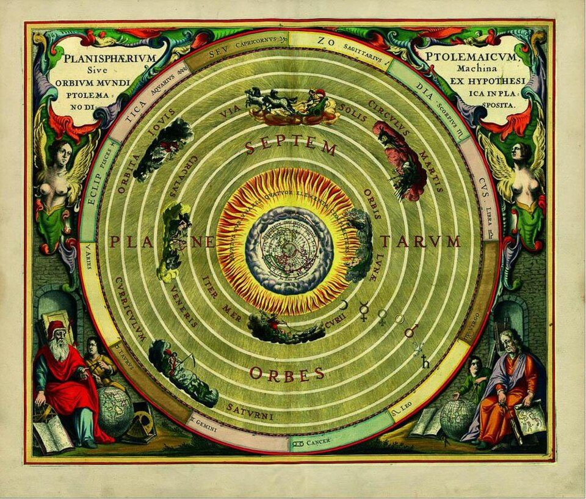
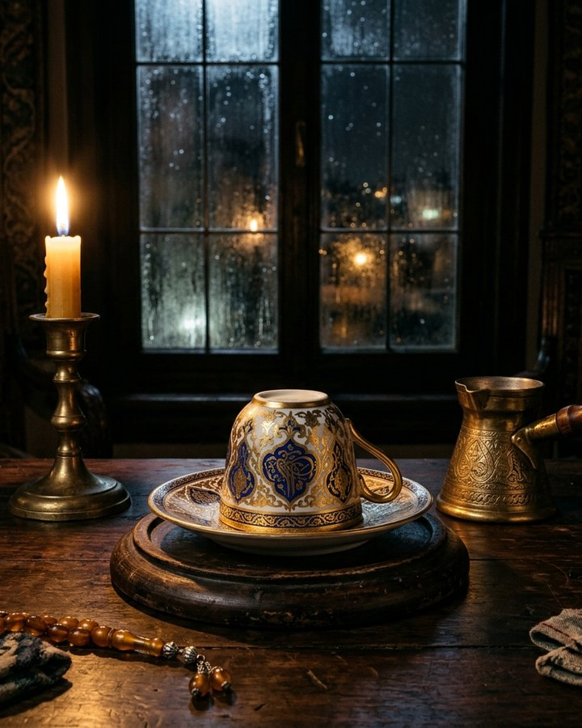
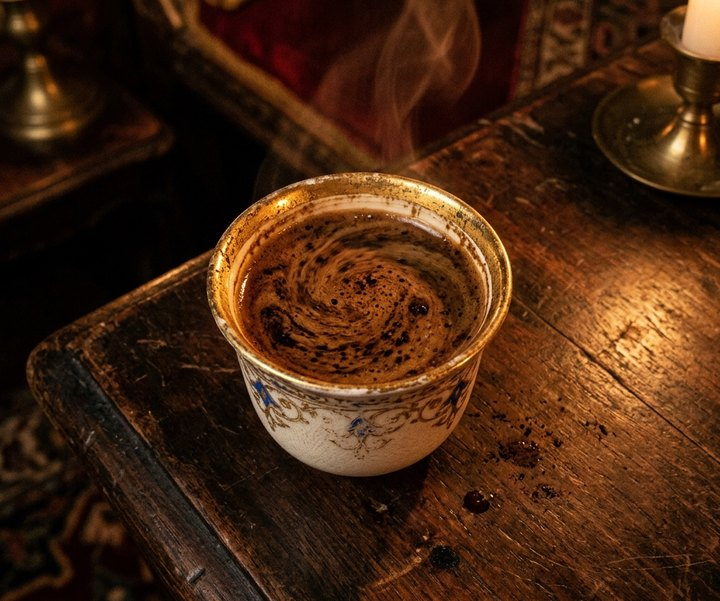
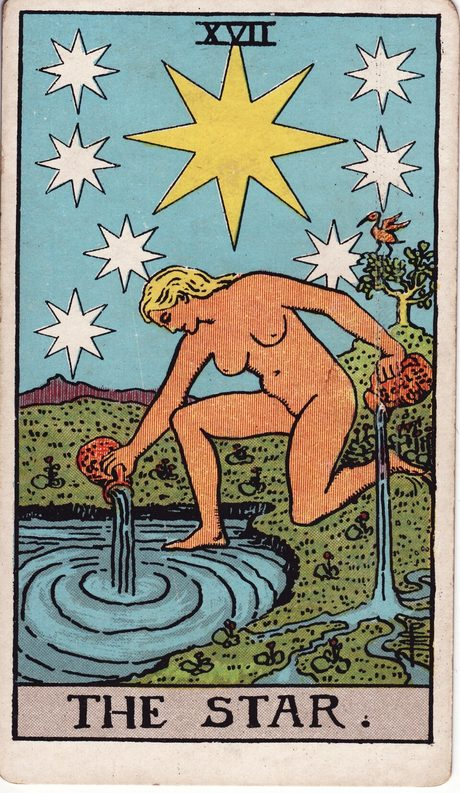
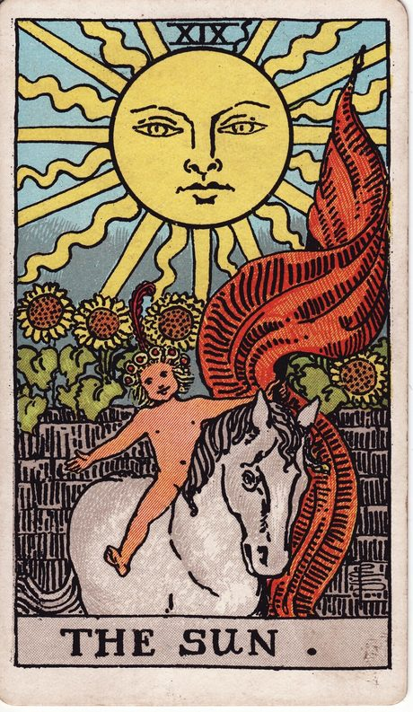

摩伊拉咖啡馆
佩拉区的雨落了一整夜，三姊妹在烛下温好咖啡，等你推门。一九〇九年石版塔罗与骨瓷杯底显影卷宗。
每日一签：同一天、同一桩心事，三姊妹会写下同一封回信；明夜再来，雨声便不同了。
推开哪一扇问讯之门
报上你的四象星火
是否携一位同行人合占（可选）

佩拉区雨夜与馆藏石版
三则沙龙旧规，四幅馆藏真迹
- 叩门先择一扇门，再报上四象星火。一杯只盛一桩心事，三姊妹才听得仔细。
- 显影饮尽，倒扣，静候片刻。杯沿看七日风向，杯壁看暗处推手，杯底看藏得最深的心结。
- 合参三幅石版画分说往昔、眼下与将至，与杯底图腾彼此映照，才成一封完整的夜话笺。




骨瓷杯底显影
饮尽，倒扣，静候片刻。在杯面按住轻旋或点击倾倒，让残渣自己开口。
杯面絮语
待残渣沉定，轻点上方三处，杯沿、杯壁与杯底便会依次亮起，说与你听。
古董塔罗圣三角
十二幅一九〇九年史密斯石版画覆于亚麻桌布，凭直觉翻开三张，分立往昔、眼下与将至。
眼下之局 · 结症
将至之兆 · 归途
十二幅石版画背面朝上，静静铺在亚麻桌布上。点任意一张，它便依次落入往昔、眼下与将至。
摩伊拉夜话笺
烛火将尽，三姊妹将杯底图腾与三张石版画合参，为你写下今夜的回信。
A · 顺水行舟
今夜星轨契合度 0 / 100